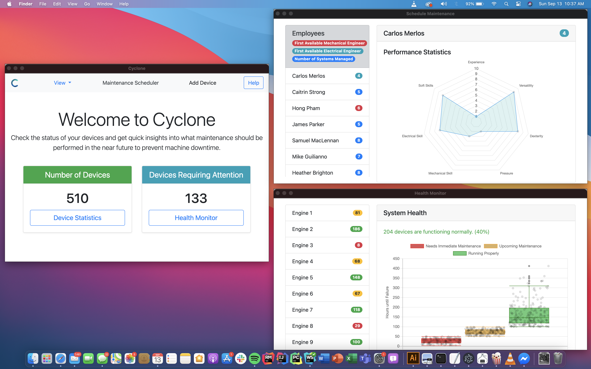

Project Cyclone uses machine learning algorithms to optimize the life cycle of industrial equipment while allowing decision makers to automatically schedule maintenance and allocate resources in the most cost-effective way.

For this project, I worked with the lead programmer who developed the Machine Learning algorithm to design and create a UI that accurately represented his vision for how the user should interact with the algorithm. To do this, I used electron.js, a software that allows the programmer to compile software for all major operating systems (macOS, Windows and Linux) using a backbone of HTML, CSS and Javascript.